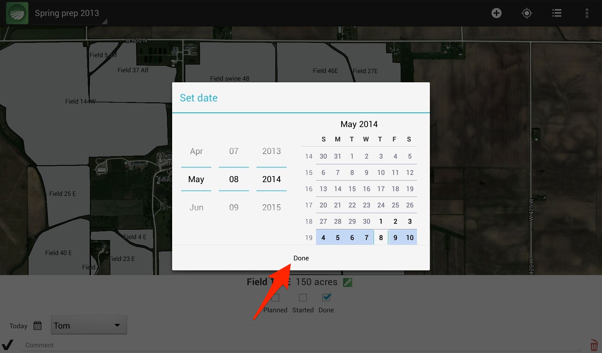
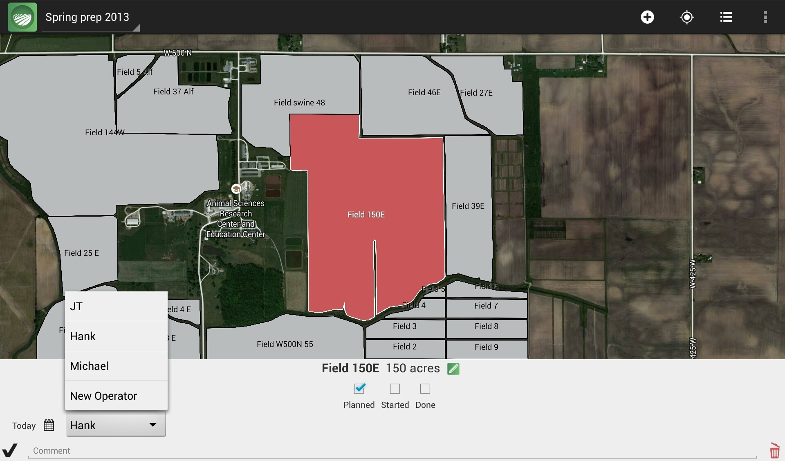

Adding operation record

When a field is selected, the operation menu will slide up. The operation menu will help you keep consistent and complete records. You can keep track of what operation was completed, when it was done, and who did it. If you'd like to record anything extra, type anything you want in the comment box.

You can change the date accordingly whether you want to plan the operation for the fall, or if you just finished and you're pulling out of the field.

You can pick an operator from the drop-down list or add a new one. The field color will match the current status: Red for Planned, Yellow for Started, and Green for Done.